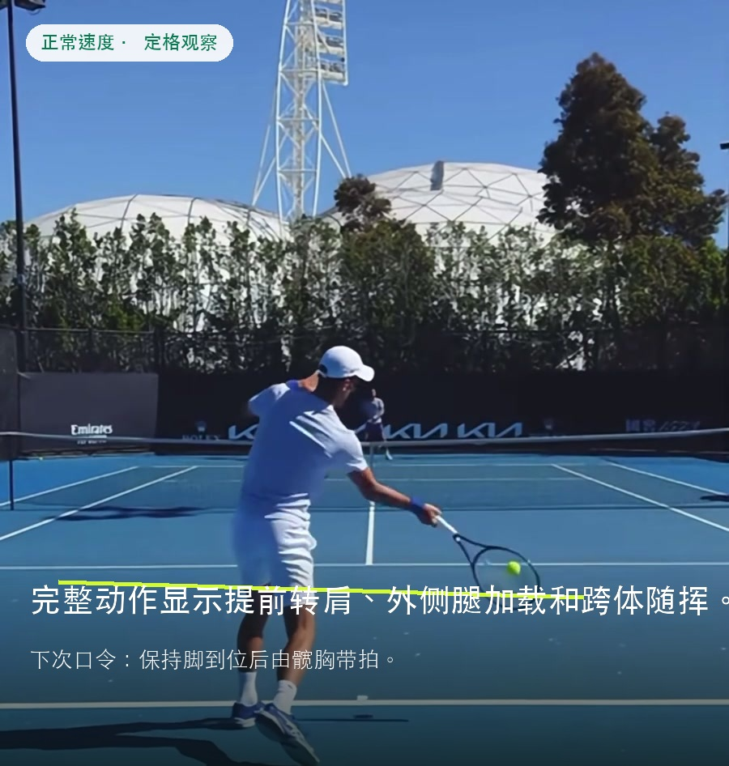
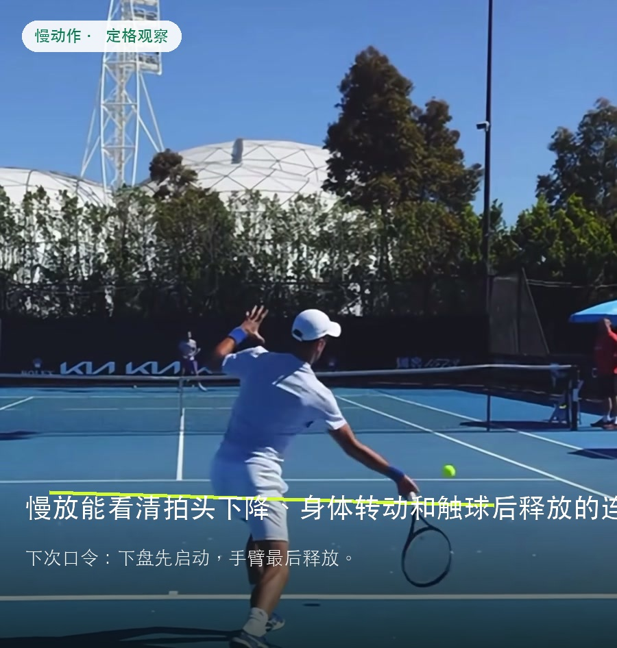
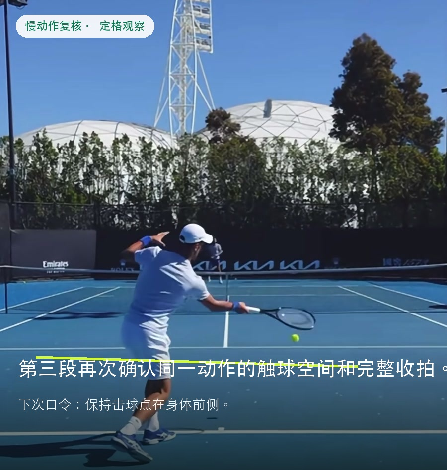

亮点
动力链顺序清晰
外侧腿建立支撑后，髋躯干带动击球臂，拍头最后通过击球区。
Tennis Movement Test
测评得分
已进入动作链高效阶段（Advanced+），本评分基于准备启动、动力链传导、击球时机、挥速释放、随挥回收与身体稳定的综合动作评定。
动力链顺序清楚：外侧腿先承重，髋胸打开，击球臂和拍头最后进入加速区。 这是一拍的三次回放，能说明动作结构，但不能代表不同落点、旋转和压力下的重复性。
分数基于 1 个完整正手动作、正常速度回放、2 段慢动作和 8fps 关键帧生成；重复回放不重复计分。



外侧腿建立支撑后，髋躯干带动击球臂，拍头最后通过击球区。
不能据此判断连续多拍、移动范围扩大或被动来球下是否仍能保持同样动力链。
三落点正手各 8 球：保持脚下先到位、髋胸带动、拍头最后释放。
这里评估的是视频中可见的拍头释放质量，不是实测拍速。外侧腿和躯干先建立速度，拍头在击球区完成最后释放。
前挥由腿髋和躯干启动，击球臂没有过早抢先。
拍头下降、滞后并快速通过身体前侧的击球窗口。
拍头跨体完成减速，肩带和身体继续自然转动。
正常速度适合判断整体节奏，但不适合单独测量精确拍面角度。
这是同一拍回放，不能用来判断多拍重复性。
保持脚、髋、胸、拍头的传导顺序
正手结构完整：准备提前、下盘加载明确、触球位于身体前侧、拍头释放和跨体随挥连续。
不能据此判断连续多拍、移动范围扩大或被动来球下是否仍能保持同样动力链。
分别为正常速度、慢动作和慢动作复核，顶部与底部应用界面已从分析画面中裁除。
三段是同一拍的重复回放，因此评分按一个完整动作生成，不按三次命中计算。
视频没有完整反手序列，反手准备、触球和动力链均不评分。